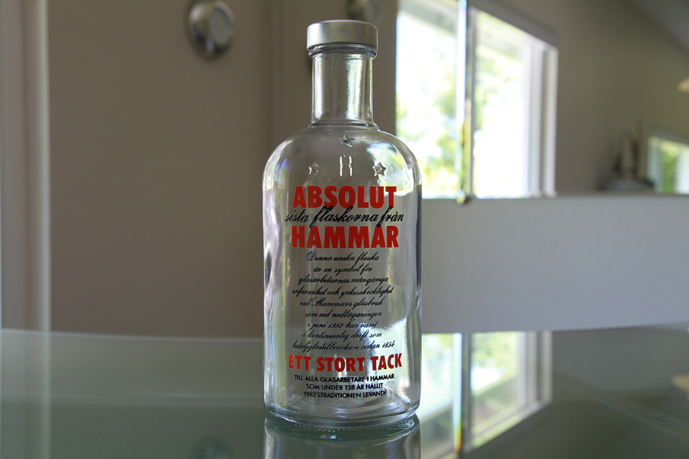

Den Hammarska Nubbevisan
(Melodi: "Helan går", Text: Tomas A. Hammar)
Hammars släkt är samlad på familjefest
Få törsten släkt
det vore allra bäst
Så låt oss göra slag i saken
(Näve slås i bordet)
Låt oss njuta brännvinssmaken
(snapsen drickes nu)
Nu är den släckt
i hela Hammars släkt!!
